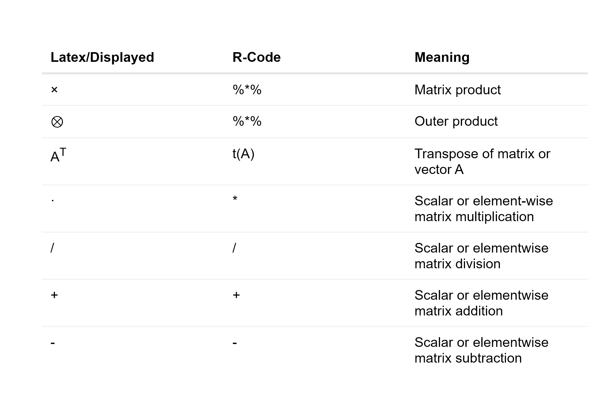

Chapter 3 Mathematical Fundations
This chapter provides an overview of the mathematical calculations and conventions used in this thesis. It is important to note that most mathematical formulas are written in matrix notation. In most cases, this will result in a direct translation to R code. All necessary assumptions required for the modeled return structure are listed in this chapter so that any reader can understand the formulas given. It is important to note that reality is too complex and can only be partially modeled. Simple, basic models are used that do not stand up to reality, but these models or variations of them are commonly used in the financial world and have proven to be helpful. The complexity of solving advanced and basic models does not differ in PSO because the dimension of the objective function is based on the number of elements that can be selected, see chapter 5.
3.1 Basic Operators
A compendium comparing commonly used mathematical symbols with R code and their meaning is given in the following table:

For a better understanding of the operators listed, the following examples are intended to illustrate the resulting dimensions and provide insight into the use of such operators.
Matrix product: \[\times: \ \ \mathbb{R}^{x \times y} \times \mathbb{R}^{y \times z} \rightarrow \mathbb{R}^{x \times z} \] with an example: \[ \begin{bmatrix}a_{1,1} &\cdots & a_{1,y} \\ \vdots & \ddots & \vdots \\ a_{x,1} & \cdots & a_{x,y} \end{bmatrix} \times \begin{bmatrix}b_{1,1} &\cdots & b_{1,z} \\ \vdots & \ddots & \vdots \\ b_{y,1} & \cdots & b_{y,z} \end{bmatrix} = \begin{bmatrix} \sum_{i=1}^y a_{1, i} \cdot b_{i,1} &\cdots & \sum_{i=1}^y a_{1, i} \cdot b_{i,z} \\ \vdots & \ddots & \vdots \\ \sum_{i=1}^y a_{y, i} \cdot b_{i,1} & \cdots & \sum_{i=1}^y a_{y, i} \cdot b_{i,z} \end{bmatrix} \] and for a vector \[\times: \ \ \mathbb{R}^{1 \times N} \times \mathbb{R}^{N \times 1} \rightarrow \mathbb{R}\] with an example: \[ \begin{bmatrix}a_{1} &\cdots & a_{N}\end{bmatrix} \times \begin{bmatrix}b_{1}\\ \vdots \\ b_{N}\end{bmatrix} = \sum_{i=1}^N a_i \cdot b_i \]
Outer product: \[\otimes: \ \ \mathbb{R}^{z \times 1} \times \mathbb{R}^{1 \times z} \rightarrow \mathbb{R}^{z \times z} \] with an example: \[ \begin{bmatrix}a_{1}\\ \vdots \\ a_{z}\end{bmatrix} \otimes \begin{bmatrix}b_{1} &\cdots & b_{z}\end{bmatrix} = \begin{bmatrix}a_{1} \cdot b_{1} &\cdots & a_{1} \cdot b_{z} \\ \vdots & \ddots & \vdots \\ a_{z} \cdot b_{1} & \cdots & a_{z} \cdot b_{z} \end{bmatrix} \]
This thesis is specified for the use of R, which is why elementwise operators are very important to make code comparable to formulas. In mathematics these operators are not common. Because of this, it needs to be specified explicitly. All elementwise operators work the same way. Suppose \(\square\) is one of the four elementwise operators, then follows that: \[\begin{align*} \square &: \ \ R^{x \times y} \times R^{x \times y} \rightarrow R^{x \times y}\\ \text{or }\ \square &: \ \ R^{x} \times R^{x \times y} \rightarrow R^{x \times y}\\ \text{or }\ \square &: \ \ R \times R^{x \times y} \rightarrow R^{x \times y} \end{align*}\]
with examples respectively: \[ \begin{bmatrix}a_{11} &\cdots & a_{1y} \\ \vdots & \ddots & \vdots \\ a_{x1} & \cdots & a_{xy} \end{bmatrix} \square \begin{bmatrix}b_{11} &\cdots & b_{1y} \\ \vdots & \ddots & \vdots \\ b_{x1} & \cdots & b_{xy} \end{bmatrix} = \begin{bmatrix}a_{11} \square b_{11} &\cdots & a_{1y} \square b_{1y} \\ \vdots & \ddots & \vdots \\ a_{x1} \square b_{x1} & \cdots & a_{xy} \square b_{xy} \end{bmatrix} \] or \[ \begin{bmatrix}a_{1} \\ \vdots \\ a_{x} \end{bmatrix} \square \begin{bmatrix}b_{11} &\cdots & b_{1y} \\ \vdots & \ddots & \vdots \\ b_{x1} & \cdots & b_{xy} \end{bmatrix} = \begin{bmatrix}a_{1} \square b_{11} &\cdots & a_{1} \square b_{1y} \\ \vdots & \ddots & \vdots \\ a_{x} \square b_{x1} & \cdots & a_{x} \square b_{xy} \end{bmatrix} \] or \[ a \ \square \begin{bmatrix}b_{11} &\cdots & b_{1y} \\ \vdots & \ddots & \vdots \\ b_{x1} & \cdots & b_{xy} \end{bmatrix} = \begin{bmatrix}a \square b_{11} &\cdots & a \square b_{1y} \\ \vdots & \ddots & \vdots \\ a \square b_{x1} & \cdots & a \square b_{xy} \end{bmatrix} \]
3.2 Formula Conventions
In mathematics random variables are written in uppercase, which is the same for matrices. To enable a distinct apperiance of both, the random variables are written in bold and uppercase. For example should \(A\) represent a matrix and \(\pmb{A}\) represents a random variable.
3.3 Return Calculation
Any portfolio optimization strategy based on historical data must start with returns. These returns are calculated using adjusted closing prices, which show the percentage change over time. Adjusted closing prices reflect dividends and are adjusted for stock splits and rights offerings. These returns are essential for comparing assets and analyzing dependencies.
3.3.1 Simple Returns
The default time frame for all raw data in this thesis is one working day and only simple rates of return are used. Assuming that there is an asset with price \(p_{t_i}\) on working day \(t_i\) and price \(p_{t_{i+1}}\) on the following working day \(t_{i+1}\), the simple rate of return for \(t_{i+1}\) can be calculated as follows: \[ r_{i+1} = \frac{p_{t_{i+1}}}{p_{t_i}}-1 \]
3.4 Markowitz Modern Portfolio Theory (MPT)
In 1952, Harry Markowitz published his first seminal paper, which had a significant impact on modern finance, primarily by outlining the implications of diversification and efficient portfolios. The definition of an efficient portfolio is a portfolio that has either the maximum expected return for a given risk target or the minimum risk for a given expected return target. A simple quote to define diversification might be, “A portfolio has the same return but less variance than the sum of its parts.” This is true when assets are not perfectly correlated, as bad and good performance can offset each other, reducing the likelihood of extreme events. For more information, see (Maringer 2005).
3.4.1 Assumptions of Markowitz Portfolio Theory
The following list contains all Markowitz assumptions according to (Maringer 2005):
- Perfect market without taxes or transaction costs
- Assets are infinitely divisible
- Expected Returns, Variances and Covariances contain all information
- Investors are risk-averse, they will only accept greater risk if they are compensated with a higher expected return
The assumption that the returns are normally distributed is not required, but is assumed in this case to simplify the problem. It is obvious that these assumptions are unrealistic in reality. More details on the requirements for using other distributions can be found in (Maringer 2005).
3.5 Portfolio Math
Proofs of the basic calculations required for portfolio optimization, as shown in (Zivot 2021), are provided in this section. Returns are presented differently than in most sources, as this is the most common data format used in practice. Suppose there are \(N\) assets described by a return vector \(\pmb{R}\) of random variables and a portfolio weight vector \(w\), respectively: \[ \pmb{R} = \begin{bmatrix} \pmb{R}_{1} & \pmb{R}_{2} & \cdots & \pmb{R}_{N} \end{bmatrix} , \ \ w = \begin{bmatrix} w_{1} \\ w_{2} \\ \vdots \\ w_{N} \end{bmatrix} \]
In this thesis, each return is simplified as being normally distributed with \(\pmb{R}_i = \mathbb{N}(\mu_i, \sigma_i^2)\). As a result, linear combinations of normally distributed random variables are jointly normally distributed and have a mean, variance, and covariance that can be used to fully describe them.
3.5.1 Expected Returns
The following formula can be used to get the expected returns of a vector with normally distributed random variables \(\pmb{R} \in \mathbb{R}^{1\times N}\): \[\begin{align*} E[\pmb{R}] &= \begin{bmatrix} E[\pmb{R}_{1}] & E[\pmb{R}_{2}] & \cdots & E[\pmb{R}_{N}] \end{bmatrix}\\ &= \begin{bmatrix} \mu_{1} & \mu_{2} & \cdots & \mu_{N} \end{bmatrix} = \mu \end{align*}\] and \(\mu_i\) can be estimated in R using historical data and the formula for the geometric mean of returns (also called compound returns). The function to calculate the geometric mean of returns from an xts object can be found in 3.6.3.
3.5.2 Expected Portfolio Returns
The following equation can be used to obtain the expected portfolio return \(E[\pmb{R}_p]\) using the formulations from the section above and a weighting vector \(w\) (e.g. portfolio weights): \[\begin{align*} E[\pmb{R}_p] &= E[\pmb{R} \times w] = E[\pmb{R}] \times w \\ &= \begin{bmatrix} E[\pmb{R}_{1}] & E[\pmb{R}_{2}] & \cdots & E[\pmb{R}_{N}] \end{bmatrix} \times \begin{bmatrix} w_{1} \\ w_{2} \\ \vdots \\ w_{N} \end{bmatrix} \\ &= \begin{bmatrix} \mu_{1} & \mu_{2} & \cdots & \mu_{N} \end{bmatrix} \times \begin{bmatrix} w_{1} \\ w_{2} \\ \vdots \\ w_{N} \end{bmatrix} \\ &= \mu_{1} \cdot w_1 + \mu_{2} \cdot w_2 + \cdots + \mu_{N} \cdot w_{N} = \mu_P \end{align*}\]
3.5.3 Covariance
The general formula of the covariance matrix \(\textstyle\sum\) of a random vector \(\pmb{R}\) with \(N\) normally distributed elements and \(\sigma_{i,j}\) as correlation of two unique values is described as follows:
\[\begin{align*}
Cov(\pmb{R}) &= E[(\pmb{R}-\mu)^T \otimes (\pmb{R}-\mu)] \\
&= \begin{bmatrix}
\sigma_1^2 & \sigma_{1,2} & \cdots & \sigma_{1,N} \\
\sigma_{2, 1} & \sigma_2^2 & \cdots & \sigma_{2, N} \\
\vdots & \vdots & \ddots & \vdots \\
\sigma_{N, 1} & \sigma_{N, 2} & \cdots & \sigma_N^2 \\
\end{bmatrix}\\
&=\textstyle\sum
\end{align*}\]
and can be estimated in R with the basis function cov() and historical data.
3.5.4 Portfolio Variance
Let \(\pmb{R}\) be a random vector with \(N\) normally distributed elements and \(w\) a weight vector. Assuming that the covariance matrix \(\sum\) of \(\pmb{R}\) is known, the variance of the linear combination of \(\pmb{R}\) can be calculated as follows: \[\begin{align*} Var(\pmb{R} \times w) &= E[(\pmb{R} \times w - \mu \times w)^2] \\ &= E[((\pmb{R} - \mu) \times w)^2] \end{align*}\]
Since \((\pmb{R} - \mu) \times w\) is a scalar, it can be transformed from \(((\pmb{R} - \mu) \times w)^2\) to \(((\pmb{R} - \mu) \times w)^T \cdot ((\pmb{R} - \mu) \times w)\) and results in: \[\begin{align*} Var(\pmb{R} \times w) &= E[((\pmb{R} - \mu) \times w)^T \times ((\pmb{R} - \mu) \times w)]\\ &= E[(w^T \times (\pmb{R} - \mu)^T) \cdot ((\pmb{R} - \mu) \times w)]\\ &= w^T \times E[(\pmb{R} - \mu)^T \otimes (\pmb{R} - \mu)] \times w \\ &= w^T \times Cov(\pmb{R}) \times w \\ &= w^T \times \textstyle\sum \times w \end{align*}\]
The same is true for an estimate of \(Var(\pmb{R} \times w)\) by using the estimate of \(\textstyle\sum\).
3.5.5 Portfolio Returns
Suppose there are \(N\) assets forming a portfolio with weights \(w_{t_0}\) at time step \(t_0\), and the portfolio is to pass through several time steps until \(t_T\) without rebalancing. What are the portfolio returns at each time step \(t_i\)? Clearly, assets with higher performance in the current time step will have a higher weight in the next time step. This can be done by adjusting the weights after each time step depending on the returns. Suppose we have a full portfolio \(\textstyle\sum w_{t_0} = 1\) with a return matrix \(R \in \mathbb{R}^{T \times N}\) and want to calculate the portfolio returns \(R_{t_1}^P\). This can be done by the following two steps:
\[\begin{align*}
Z_{t_1} &= (1+R_{t_1}) \cdot t(w_{t_0})\\
R_{t_1}^P &= \sum_{n = 1}^N Z_{t_1} - 1
\end{align*}\]
And because the portfolio was full in \(t_0\), the adjusted weights in \(t_1\) are \(w_{t_1} = Z_{t_1}/\sum_{n = 1}^N Z_{t_1}\) (elementwise division). These new weights can be used in the next time step as a replacement for the weights \(w_{t_0}\) in the formula above. The recusive formula for holding a portfolio with weights \(\textstyle\sum w_{t_0} = 1\) in \(t_0\) and return matrix \(R \in \mathbb{R}^{T \times N}\), has the portfolio return \(R_{t_i}^P = \textstyle\sum_{n = 1}^N Z_{t_i} - 1\) in \(t_i\) with \(i=1, 2, \cdots, T\) for:
\[
Z_{t_i} =
\begin{cases}
(1+R_{t_i})\cdot t(w_{t_0}) &\text{ if }i=1\\
(1+R_{t_i})\cdot \frac{Z_{t_{i-1}}}{\sum_{n = 1}^N Z_{t_{i-1}}} &\text{ if }i>1
\end{cases}
\]
The requirement that the portfolio needs to be full, can be achieved by adding a additional weight to \(w_{t_0}\), that contains the residual \(1-\textstyle\sum w_{t_0}\) and a additional zero return vector to \(R\). This calculation of portfolio returns is implemented in the function calc_portfolio_returns() below.
3.6 R-Functions
|||in progress|||
3.6.3 ret_to_geomeanret()
The geometric mean of returns is a better estimator than the arithmetic mean of returns because it captures the exact mean price changes over a period of time. The variance estimated from the daily returns is a daily variance, so the returns must have the same time base. This can be done by calculating the geometric mean of the returns from multiple daily returns. Assuming there is an asset with returns \(r_1 = 0.01\), \(r_2=-0.03\), and \(r_3=0.02\), it follows that the geometric mean return \(r^{geom}\) can be calculated as: \[ r^{geom} = ((1+r_1) \cdot (1+r_2) \cdot (1+r_3))^{1/3}-1 = -0.0002353887 \] And the advantage is that it is a daily average return that gives exactly the same result as the real return, that is: \[ (1+r^{geom})^3 = (1+r_1) \cdot (1+r_2) \cdot (1+r_3) \] This is not the case with the arithmetic mean of the returns. The general formula for calculating the geometric mean return of \(n\) days is: \[ r^{geom} = (\prod_{i=1}^n (1+r_i))^{\frac{1}{n}}-1 \] and as R code:
ret_to_geomeanret <- function(xts_ret){
sapply((1+xts_ret), prod)^(1/nrow(xts_ret))-1
}3.6.4 calc_portfolio_returns()
This is the implementation of a vectorial calculation of portfolio returns over multiple periods with a weighting vector weights at \(t_0\) and no re-balancing:
calc_portfolio_returns <-
function(xts_returns, weights, name="portfolio"){
if(sum(weights)!=1){
xts_returns$temp___X1 <- 0
weights <- c(weights, 1-sum(weights))
}
res <- cumprod((1+xts_returns)) * matrix(
rep(weights, nrow(xts_returns)), ncol=length(weights), byrow=T)
res <- xts(
rowSums(res/c(1, rowSums(res[-nrow(xts_returns),])))-1,
order.by=index(xts_returns)) %>%
setNames(., name)
return(res)
}This function has the same results as the Return.portfolio() function from the PortfolioAnalytics package.